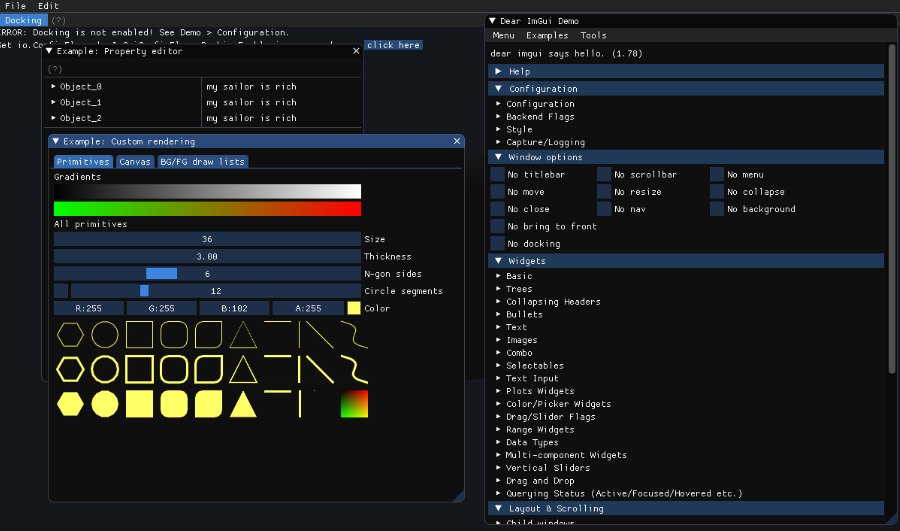
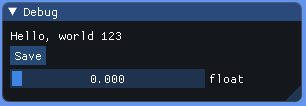
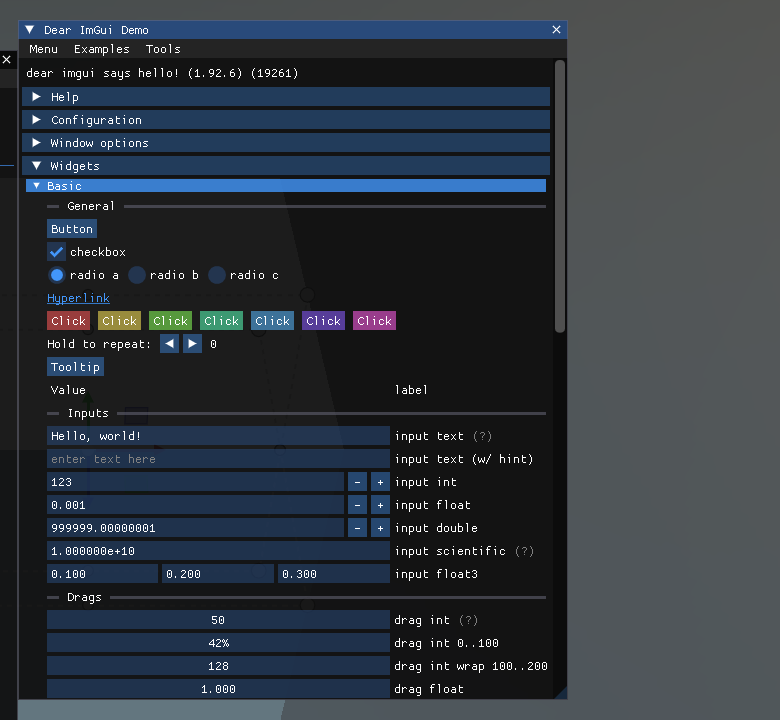
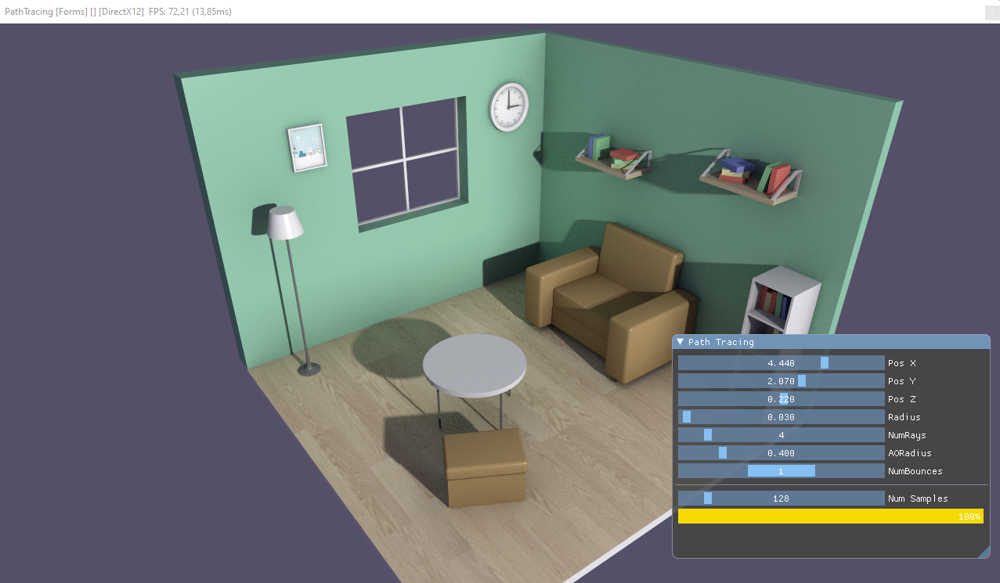

Getting Started

This page takes you from an empty project to your first ImGui window: install the package, register ImGuiManager in the scene, and write a Behavior that declares the UI every frame. It also covers the options of ImGuiManager, custom fonts, and how the UI shares input with the rest of your scene.
Install the package
Add the Evergine.ImGui NuGet package to your application project (the one that contains your scenes and components):
<!-- Use the same version as the other Evergine packages in your project. -->
<PackageReference Include="Evergine.ImGui" Version="EVERGINE_VERSION" />
Evergine.ImGui brings in Evergine.Bindings.Imgui, which contains the C# bindings for Dear ImGui, ImPlot, ImNodes and ImGuizmo, and the native cimgui library they call.
Important
The bindings package ships native binaries for Windows (x64 and ARM64), Linux (x64 and ARM64), macOS (x64 and ARM64) and WebAssembly. There are no Android or iOS binaries, so ImGui is not available in mobile builds.
Allow unsafe code
The bindings are a thin layer over the C API. Widgets that edit a value take a pointer to it, so the code that calls them must be compiled with unsafe code enabled. Add this property to the project file:
<PropertyGroup>
<AllowUnsafeBlocks>True</AllowUnsafeBlocks>
</PropertyGroup>
In Visual Studio you can set the same option from the project properties, under Build > Allow unsafe code.
Register ImGuiManager
ImGuiManager is a scene manager. Add it in RegisterManagers of every scene that shows ImGui, and enable the extra libraries you need:
using Evergine.Framework;
using Evergine.UI;
public class MyScene : Scene
{
public override void RegisterManagers()
{
base.RegisterManagers();
this.Managers.AddManager(new global::Evergine.Framework.Physics.PhysicsManager());
// ImPlot, ImNodes and ImGuizmo each need their own context, which is only
// created when the flag is set before the manager is attached.
this.Managers.AddManager(new ImGuiManager()
{
ImPlotEnabled = true,
ImNodesEnabled = true,
ImGuizmoEnabled = true,
});
}
protected override void CreateScene()
{
}
}
ImGuiManager properties
| Property | Default | Description |
|---|---|---|
| ImGuizmoEnabled | false | Connects ImGuizmo to the ImGui context and calls ImGuizmo_BeginFrame() at the start of every frame. Required before calling any ImguizmoNative function. |
| ImPlotEnabled | false | Creates the ImPlot context. Required before calling any ImplotNative function. |
| ImNodesEnabled | false | Creates the ImNodes context. Required before calling any ImnodesNative function. |
| CustomFonts | null | Array of CustomFont loaded into the font atlas instead of the built-in font. See Custom fonts. |
| MergeCustomFonts | true | For custom fonts that declare a GlyphRange, merges their glyphs into the previous font instead of adding a separate font. This is how an icon font is combined with a text font. |
| RequiresExplicitRenderingCamera | false | When false, the manager uses the render manager's ActiveCamera3D. When true, it does nothing until you assign RenderingCamera. |
| RenderingCamera | active 3D camera | The camera whose display receives the UI and whose mouse, keyboard and touch input feed ImGui. Changing it at run time moves the UI to the new camera's display. |
ImGuiManager also has three methods:
| Method | Description |
|---|---|
CreateImGuiBinding(Texture) |
Returns the ImTextureRef that igImage and other image widgets need to draw an Evergine texture. Calling it again with the same texture returns the same reference. See Image. |
RemoveImGuiBinding(Texture) |
Releases the binding. Call it when you stop drawing the texture or dispose it. |
TrySetCurrentContext() |
Makes this manager's ImGui context current. Only needed when more than one scene with an ImGuiManager is alive at the same time. |
Note
The flags and fonts are read when the manager is attached to the scene. Set them in the object initializer, as above, rather than later from a component.
Write your first window
Create a Behavior and declare the window in Update(). Everything the UI edits lives in fields, because the method runs every frame and local variables would be reset each time.
using Evergine.Bindings.Imgui;
using Evergine.Framework;
using Evergine.Mathematics;
using Evergine.UI;
using System;
public unsafe class MyUI : Behavior
{
// State that must survive from one frame to the next.
private bool open = true;
private float value;
private int saveCount;
protected override void Update(TimeSpan gameTime)
{
// The close button of the window sets 'open' to false. Stop declaring the
// window from then on, or it would reappear on the next frame.
if (!this.open)
{
return;
}
// SetNextWindow* calls apply to the next igBegin, so they must come first.
ImguiNative.igSetNextWindowSize(new Vector2(300, 100), ImGuiCond.FirstUseEver);
if (ImguiNative.igBegin("Debug", this.open.Pointer(), ImGuiWindowFlags.None))
{
ImguiNative.igText("Hello, world 123");
if (ImguiNative.igButton("Save", Vector2.Zero))
{
this.saveCount++;
}
fixed (float* valuePointer = &this.value)
{
ImguiNative.igSliderFloat("float", valuePointer, 0.0f, 1.0f, "%.3f", ImGuiSliderFlags.None);
}
}
// igEnd is always required, even when igBegin returns false because the
// window is collapsed or hidden.
ImguiNative.igEnd();
}
}
Then add the behavior to an entity. In Evergine Studio, create an empty entity and add the MyUI component to it. In code, add it from CreateScene:
protected override void CreateScene()
{
var ui = new Entity("UI")
.AddComponent(new MyUI());
this.Managers.EntityManager.Add(ui);
}
Run the project and the window appears over the scene. It can be moved, resized and collapsed with the mouse, and ImGui remembers its position between frames by its title, "Debug".

The window declared by MyUI. Dragging the slider changes the value field, and the next frame draws the slider from that field.
Tip
igText and the other text widgets treat their argument as a printf-style format string. Write %% for a literal percent sign, or use igTextUnformatted(text, null) for text you do not control, such as file names or user input.
The built-in demo window
Dear ImGui includes a demo window that exercises almost every widget and flag. It is the fastest way to find out what a control looks like and which function draws it:
using Evergine.Bindings.Imgui;
using Evergine.Framework;
using Evergine.UI;
using System;
public unsafe class DemoWindow : Behavior
{
private bool open = true;
protected override void Update(TimeSpan gameTime)
{
if (this.open)
{
ImguiNative.igShowDemoWindow(this.open.Pointer());
}
}
}

The ImGui-Demo repository contains a complete Evergine project that shows the demo windows of Dear ImGui, ImPlot and ImNodes, and an ImGuizmo gizmo attached to an entity.
A property editor for an entity
Widgets that edit a Vector3 take a pointer to an Evergine Vector3 directly, so editing a component is a matter of copying the value out, passing its address, and writing it back when the widget reports a change:
using Evergine.Bindings.Imgui;
using Evergine.Framework;
using Evergine.Framework.Graphics;
using Evergine.Mathematics;
using Evergine.UI;
using System;
public unsafe class TransformInspector : Behavior
{
[BindComponent]
private Transform3D transform = null;
private bool open = true;
protected override void Update(TimeSpan gameTime)
{
if (!this.open)
{
return;
}
ImguiNative.igSetNextWindowPos(new Vector2(10, 10), ImGuiCond.FirstUseEver, Vector2.Zero);
ImguiNative.igSetNextWindowSize(new Vector2(320, 0), ImGuiCond.FirstUseEver);
if (ImguiNative.igBegin(this.Owner.Name, this.open.Pointer(), ImGuiWindowFlags.AlwaysAutoResize))
{
// Transform3D exposes properties, not fields, so work on a local copy
// and assign it back only when the widget reports a change.
Vector3 position = this.transform.LocalPosition;
if (ImguiNative.igDragFloat3("Position", &position, 0.01f, 0, 0, "%.2f", ImGuiSliderFlags.None))
{
this.transform.LocalPosition = position;
}
Vector3 rotation = this.transform.LocalRotation;
if (ImguiNative.igDragFloat3("Rotation", &rotation, 0.01f, 0, 0, "%.2f", ImGuiSliderFlags.None))
{
this.transform.LocalRotation = rotation;
}
Vector3 scale = this.transform.LocalScale;
if (ImguiNative.igDragFloat3("Scale", &scale, 0.01f, 0.01f, 100f, "%.2f", ImGuiSliderFlags.None))
{
this.transform.LocalScale = scale;
}
ImguiNative.igSeparator();
ImguiNative.igText($"{ImguiNative.igGetIO_Nil()->Framerate:F0} FPS");
}
ImguiNative.igEnd();
}
}
Add TransformInspector to any entity that has a Transform3D and the window edits that entity. The same pattern scales to full tools: the UI of the path tracer demo is a list of sliders bound to its render settings in exactly this way.

Custom fonts
By default ImGui uses its built-in bitmap font. To use your own, place the .ttf files in the project's Content folder and list them in CustomFonts. Paths are relative to the root of the application's assets directory, which is the Content folder at run time.
this.Managers.AddManager(new ImGuiManager()
{
CustomFonts = new[]
{
// The first font becomes the default font of every window.
new CustomFont("Fonts/Roboto-Regular.ttf", 16.0f),
// An icon font merged into the previous one. The glyph range is a list of
// [first, last] pairs terminated by 0, as Dear ImGui expects.
new CustomFont("Fonts/icons.ttf", 16.0f, new ushort[] { 0xE000, 0xF8FF, 0 }),
},
MergeCustomFonts = true,
});
CustomFont field |
Default | Description |
|---|---|---|
| Path | Path of the font file, including its extension, relative to the assets directory root. A font that cannot be found is skipped with a warning. | |
| Size | 14 | Font size in pixels. |
| GlyphRange | null | Zero-terminated pairs of the first and last character to load. Leave it null to load the font's default range. A range with fewer than three elements is ignored. |
Draw on a specific camera
With more than one camera, the UI goes to the render manager's active 3D camera unless you choose another one. To wait for a camera that does not exist yet, for example one created later by your own code, set RequiresExplicitRenderingCamera and assign RenderingCamera when it is ready:
using Evergine.Framework;
using Evergine.Framework.Graphics;
using Evergine.UI;
public class ImGuiCameraSelector : Component
{
[BindComponent]
private Camera3D camera = null;
[BindSceneManager]
private ImGuiManager imGuiManager = null;
protected override void OnActivated()
{
base.OnActivated();
// Requires the manager to be registered with RequiresExplicitRenderingCamera = true.
this.imGuiManager.RenderingCamera = this.camera;
}
}
Sharing input with the scene
ImGuiManager listens to the same mouse, keyboard and touch dispatchers as the rest of your application, and it does not consume the events. A drag over an ImGui slider also reaches, for example, a camera controller that orbits on mouse drag. Dear ImGui tells you when it is using the input, so check it before reacting to your own:
var io = ImguiNative.igGetIO_Nil();
if (io->WantCaptureMouse == 0)
{
// The mouse is not over an ImGui window: handle it in the scene.
}
WantCaptureKeyboard does the same for the keyboard, and is set while a text field has focus.